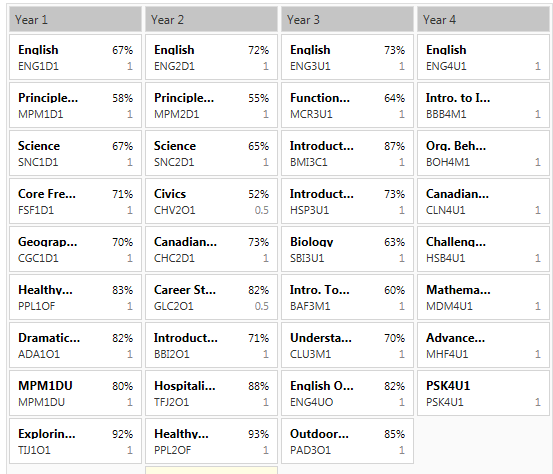

Student-athlete
Academics
The original site documented Sydney's high-school marks and early thoughts about post-secondary study.
Historical academic record
The original page explained that its Year 1–4 columns represented grades 9 through 12, and that blank marks indicated courses where the final exam had not yet been written.
It also recorded summer-school results of 75% in Grade 12 mathematics and 82% in Grade 12 English. Sydney was considering health sciences, such as kinesiology, or business.
This is a historical snapshot from 2015, not a current academic profile.

Select the image to view it at full size.
Looking ahead
The original bio emphasized balancing hockey with education and choosing a path that would support long-term growth beyond the rink.